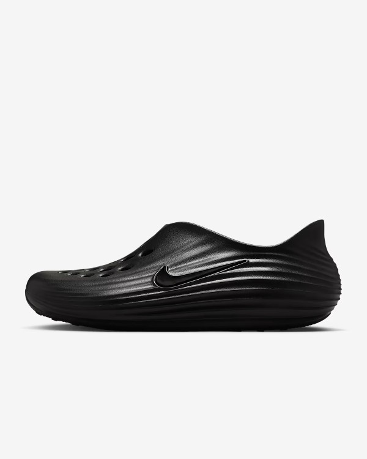
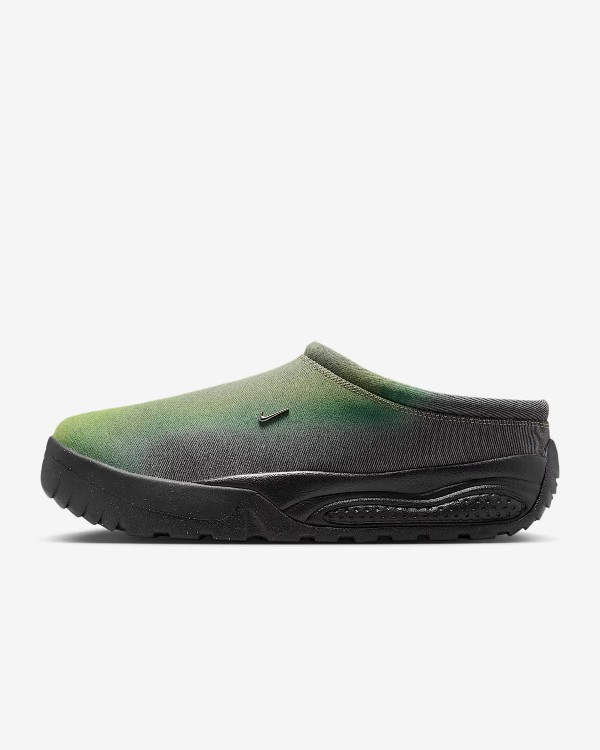
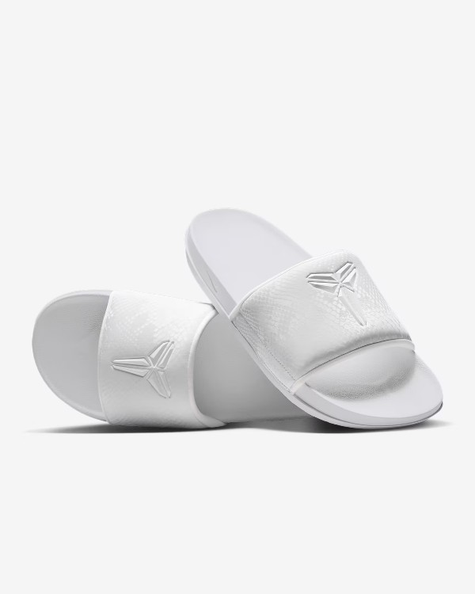
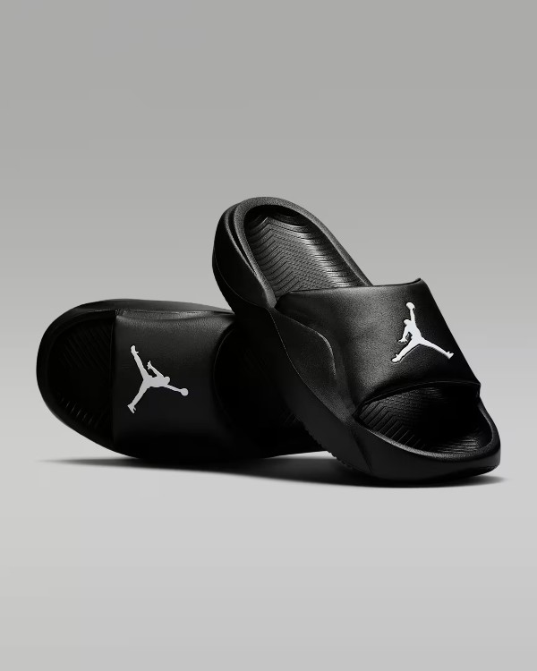

Shoes
Explore Our Exclusive Selection of Nike Shoes
Step into style and performance with our curated collection of Nike footwear. Whether you're chasing
your next personal best or looking for everyday comfort, our Nike selection has something for everyone.
From the iconic Air Max and Air Force 1 to the latest in React and Zoom technology, each pair combines
innovative design with unmatched comfort.We carry a wide range of Nike shoes for men, women, and kids —
including running shoes, basketball
sneakers, casual streetwear, and training footwear. Our selection features both timeless classics and
the newest releases, so you can stay ahead of the game in style and function. Looking for bold colors,
limited editions, or sleek minimalist designs? You'll find them here. Every pair we stock is 100%
authentic and chosen with quality and style in mind. Whether you're shopping for athletic performance,
all-day comfort, or the latest sneaker trends, you'll find the perfect Nike fit here.
Browse our Nike collection today and discover why it's one of the most trusted names in sportswear.
Great style, unbeatable performance — just do it.
Sandals & Slides
 Nike ReactX Rejuven8 $70
Give your feet a rest. Made with soft and responsive ReactX foam, the Rejuven8 uses some of our best tech to create a recovery shoe so comfortable you'll want to wear it every day. Nike ACG Rufus $115
The ACG Rufus blends a grippy outsole with a more cushioned midsole, bringing both comfort and traction while you're wandering off the beaten path or navigating the urban terrain. And thanks to its easy-to-wear design that can be dressed up or down, it's sure to earn a spot in your footwear rotation. Go ahead—slip into pure bliss.
 Kobe Offcourt $42
The Offcourt Slides are designed to help you relax and recharge. The innovative, dual-layered foam and soft lining on the strap ensure a gratifying, full-foot experience. A Kobe Sheath logo and iconic snakeskin texturing bring the Mamba Mentality to your recovery.
 Nike Offcourt Adjust $40
Nike Offcourt Adjust $40
Post game, errands and more—adjust your comfort on the go. The adjustable, padded strap lets you perfect your fit, while the lightweight foam midsole brings first-class comfort to your feet.
 Jordan Franchise $35
Made from robust yet flexible foam, these slides support your every step. A slight curve in the footbed helps keep the fit feeling secure. And with the Jumpman front and center, you can show off your Jordan pride.